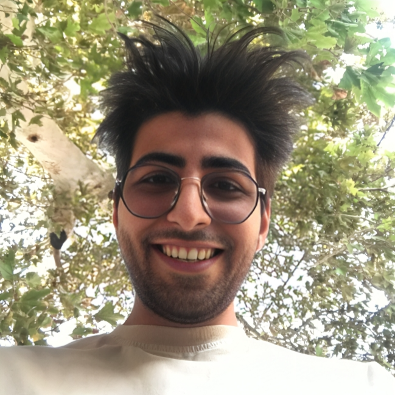

Ali Ahmadi Roghabadi
I completed my Bachelor's degree in Computer Science from the University of Tehran while simultaneously collaborating with a Deep Learning Lab, where I gained experience working on machine learning research and projects.
Currently, I am researching computational neuroscience and continual learning, with an interest in developing systems that can learn and adapt over time. I am particularly interested in applying these ideas to robotics and large language models. Outside of research, I also spend some of my free time on competitive programming, enjoying the problem-solving and algorithmic challenges it offers.
News / Updates
| 2026 | Starting research in computational neuroscience and continual learning, with a focus on understanding intelligent systems and adaptive learning mechanisms. |
| 2025 | Graduated with a B.S. in Computer Science from the University of Tehran. |
| 2025 | Fine-tuned OpenAI Whisper on Persian speech data for automatic speech recognition. |
| Feb 2023 | Attended the 6th International Conference on Pattern Recognition and Image Analysis (IPRIA 2023) at the University of Tehran. |
About
Research Interests
- Computational Neuroscience
- Continual Learning
- Deep Learning
Education
Research Experience
Projects
Fine-tuned OpenAI's Whisper model on Persian speech data to improve automatic speech recognition accuracy for Farsi.
View on GitHubInvestigating continual learning strategies for neural networks that adapt to new tasks without catastrophic forgetting, with applications to robotics.
View on GitHubSolutions and notes from competitive programming practice — algorithmic challenges, data structures, and problem-solving techniques.
View on GitHubMore on github.com/dwrrio
Quotes
-
There is no goodness waiting for us, no destiny guiding us. The creator has abandoned humanity. The cruelest burden is not this reality itself, but our refusal to accept it. Humans are masters of self-deception.
— Unknown -
Ignorance more frequently begets confidence than does knowledge.
— Charles Darwin